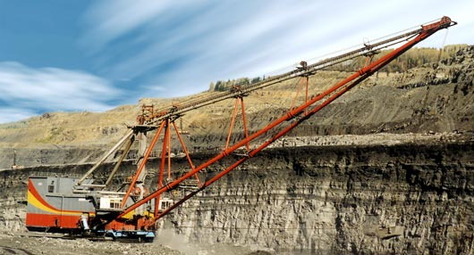

Шагающий экскаватор производства УЗТМ
В советские годы Свердловск считался индустриальным центром страны, во время Великой Отечественной войны сюда было эвакуировано более 60 крупных предприятий из Центральной России и Украины. Некоторые из прибывших заводов полностью сливались с однопрофильными заводами города, тем самым усиливая их производственную мощность, другие начинали самостоятельную деятельность, становясь основоположниками новых отраслей уральской промышленности.